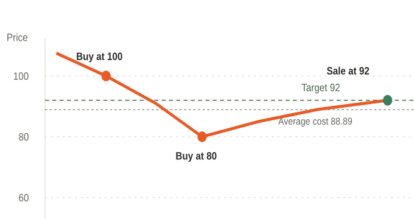

A worked example
What happens to the money?
One example with round numbers: two buys, the average cost, a sale above it, and two paths where the sale does not come. The numbers explain the arithmetic. They are not the bot’s settings and not a forecast.
Find something on this page
The example
Take 1,000 set aside for the bot. Each buy uses 10% of it, so 100. The exchange charges 0.1% on every buy and every sale. The first buy is at a price of 100; the coin then falls and the second buy is at 80. Both buys are assumed to go through.

Follow each piece of the account.
The cash that is left and the coins that are held are shown separately.
| Item | How it is worked out | In the example |
|---|---|---|
| First buy | 10% of 1,000, at 100 per coin | 100.00 buys 1.0000 coins |
| Second buy | 10% of 1,000, at 80 per coin | 100.00 buys 1.2500 coins |
| Average cost | Money spent ÷ coins held | 200.00 ÷ 2.2500 = 88.89 per coin |
| Sale price | Average cost × 1.035 | 92.00 per coin, 3.5% above the average |
| Fees on the buys | 0.1% of 200.00 | 0.20 |
| Cash after the buys | 1,000 − 200.00 − 0.20 | 799.80 |
| Value of the sale | 2.2500 coins × 92 | 207.00 |
| Fee on the sale | 0.1% of 207.00 | 0.21 |
| Cash after the sale | 799.80 + 207.00 − 0.21 | 1,006.59 |
If the price reaches 92
Both buys are sold together. The 1,000 has become 1,006.59, and the money is free for another cycle. Another cycle is possible, not certain, and its first buy is not necessarily below this sale.
Three ways it can stand
The same start and the same fees. Nothing here says which is likely or how long it takes.
| Where the price is | Cash | Coins held, at that price | Together | Change |
|---|---|---|---|---|
| Sold at 92 | 1,006.59 | 0.00 | 1,006.59 | +6.59 |
| Still open at 84 | 799.80 | 189.00 | 988.80 | −11.20 |
| Still open at 60 | 799.80 | 135.00 | 934.80 | −65.20 |
The sale can be below your first buy.
Here the sale at 92 is below the first buy at 100 and above the average of 88.89. The second buy lowers the average because the same 100 buys more coins at 80. It also means 200 is committed instead of 100.
The 3.5% and the 10% steps are teaching numbers. The bot’s own levels and sizes are different and are not published.
How long does this take?
The example has no days in it because there is no honest fixed answer. A sale can come quickly, much later or never, and a coin that is still held stays exposed until it is sold.
A 14-day trial can end with both buys still open. It shows you the setup and the experience, not how long trades take.
What the example leaves out
Orders that fill only in part, price gaps, further buys, several coins at once, minimum order sizes and taxes. The NoGuru and Cornix subscriptions are billed separately in US dollars and are not taken from this 1,000.
USDT has risks of its own, including its issuer and the chance that it stops being worth one dollar.
What changes in a sharp fall?
Nothing is borrowed, so nothing can be force-sold. That does not prevent a large loss in value or make a recovery certain.